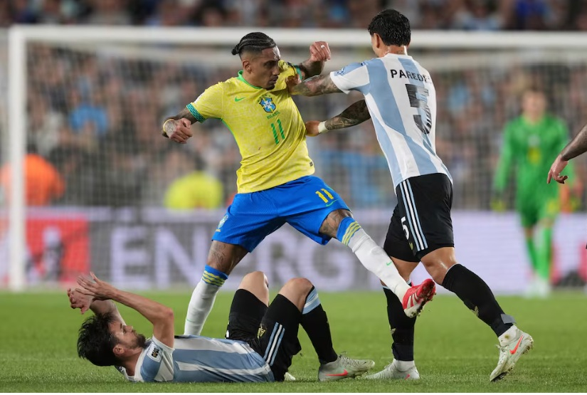

La "paliza" con la que amenazó Raphinha la propinó Argentina a Brasil
Fecha: Marzo 26, 2025
Argentina derrotó 4-1 a Brasil en un histórico partido de las eliminatorias sudamericanas para el Mundial 2026.
Detalles del partido:
- Confianza de Raphinha: El jugador brasileño prometió una "paliza" previo al encuentro.
- Goles argentinos: Julián Álvarez, Enzo Fernández, Alexis Mac Allister y Giovanni Simeone.
- Brasil sin respuestas: Solo anotó Matheus Cunha tras error defensivo.
- Ausencia clave: Lionel Messi no jugó por lesión.